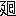

| 死の素描 | |
| 堀 辰雄 | |
| (2015) | |
死の素描
堀辰雄
僕は、ベツドのかたはらの天使に向つて云つた。
「蓄音機をかけてくれませんか？」
この天使は、僕がここに入院中、僕を受持つてゐるのだ。彼女は白い看護婦の制服をつけてゐる。
「何をかけますか？」
「シヨパンのノクタアンを、どうぞ――」
蓄音機の穴から、一羽の眞赤な小鳥がとび出して來て、僕の耳の中に入つてしまふ。それからその小鳥は、僕の骨の森の中を自由にとびまはり、そして最後に、僕の肋骨の一つの上に來て、とまる。それが羽ばたく度毎に、僕は苦しく咳こむのだ。僕はこの小鳥を眠らせるために、吸入器をかけさせよう......。
天使は僕の夢をよく見拔いてゐて、それを調節する。それが彼女の役目なのだ。彼女は、微笑しながら、僕の聽いてゐるレコオドを取替へてしまふ。
＊
僕は天使にこつそりと手紙を書いてゐた。僕は手紙を書くことを禁じられてゐた。それを彼女に見つかつた。
僕はその手紙を隱し損つた。
「その手紙をお見せなさい」と彼女が云つた。
「いけません」
「どうしてもですか」
「いやです」
「それなら、それを私に讀んで下さい」
僕はそれを承諾するほかはなかつた。彼女に聞かれて惡いところは讀まずにゐれはいいと決心しながら。
「――僕の小鳩よ」
「おお！」
「――僕はあなたに惡い報告をしなければなりません。僕はもう死んでしまひましたよ。しかし、死んでゐることと、生きてゐることとは、一體どう違ふんでせう？ これからも僕は、何時でも行きたい時には、あなたのところへ行くことが出來ます。ただ、あなたの方から僕のところへ來られなくなつただけは不便ですね。その代り、僕等はもつと便利になりました。それは、まだ僕が生きてゐた時は、よく僕等二人がいつのまにか四人になつてしまひ、どれがあなただか、僕だか、僕の中のあなただか、あなたの中の僕だか、分らなくなつてしまつて、大へん不便を感じたものです。しかし、これからはもう、そんなことは無いでせう。どうか僕の死んだことを、あんまり悲しまないで下さいね。或る詩人がかう言つてゐます。生きてゐるものと死んでゐるものとは、一錢銅貨の表と裏とのやうに、非常に遠く、しかも非常に近いのだ、と......」
僕はその手紙の朗讀を終へた。天使は手紙そのものよりも、その手紙の受取人の方に、餘計興味を持つたやうに見えた。
「あなたの戀人は何處に居ますの？」
「パラダイス・ビルの地下室......」
「まあパラダイスにも地下室があつて？ そこで何をしていらつしやるの？――あてて見ませうか？ バアのおかた？」
「うん、ブルウバアドつていふバアさ」僕は思はず微笑した。
「お年齡はいくつ？」
「十九ぐらゐ」
「何年前からお知り合ひですの？」
「千年位前からも――僕にはそんな氣がする......」
＊
僕と彼女は、初めてランデ・ヴウをした時に、互に約束しあつたものだ。どちらが相手をより多く苦しませることが出來るかやつて見ようと。
その例、――彼女は、彼女自身が空しく僕の手紙を待つてゐることの苦痛をよく知りながら、しかも何度、彼女は僕に手紙を書かなかつたであらう？
そしてこの二人の「苦しめごつこ」の結果は、たうとう或る日の夕方、僕が公園のベンチの上で彼女を待ちあぐんでゐる最中、突然、僕の左の胸がキリキリと痛み出す位にまでなつた。そしてその痛みは、日一日と、僕の胸の中に深く、その錐の先を突込んで行つた。
僕は勿論、その得體の知れない痛みを、彼女のことをあんまり思ひつめてゐるための痛みとしか考へなかつた。
僕は、このロマンチツクな痛みを、人々に隱してゐた。彼女にさへも。
ところが、或る日のこと、僕は彼女の前で、思はず顰めつ面をしてしまつた。
「どうしたの？」
「なんでもないんだよ」
「なんだつてそんな顏をしたの？」
「僕は今朝見た、いやな夢を思ひ出したんだよ」
「どんな夢を見たの？」
「僕が鰐に食べられてしまつた夢をさ」
僕は僕の答へが彼女に氣に入らないことをすぐに認めた。彼女は彼女で、僕のちよつとした顰めつらの中にさへ、彼女自身の苦痛の口實を探し求めずにはゐられないのだ。
僕はしみじみと、愛し合ふことは、結局、苦しめ合ふことであるのを感じた。
そして彼女との最後の夜。
誰がそれを豫知できたか？ すこしも他の夜とはちがはない夜。
その翌朝、僕は外出しようとして、ネクタイを結びながら、鏡の中の僕が、眞青な顏をして、倒れるのを見た。それから非常に高い熱が僕を壓しつぶした。
僕はすぐ病院に入れられた。
醫者は僕が急性肺炎であると斷言した。それから例の胸の痛みは、この病氣の前兆に過ぎなかつたのであると。
僕はさういふ醫者の見方を至極單純だと思つた。
眠れない夜。
四十度近い熱は、僕のベツドを、日にやけた砂濱のやうに、熱くした。
僕は、そのベツドの上を反轉しながら、あたかも人が砂濱に腹這ひながら少しづつ汐にそまつて行くやうに、少しづつ死にそまつて行つた。ますます青ざめて行きながら。
＊
醫者は僕に注射をする時には、いつも白い看護服をきた僕の受持の天使を助手にした。
この天使は過失ばかりしてゐた。彼女は屢〻、皮下注射と靜脈注射とを混同した。
僕の衰弱した機能は、彼女の過失によつて、注射し損はれる度毎に、腦貧血を起すのだ。
腦貧血は、僕に薄荷のにほひを嗅がせながら、僕をエレヴエタアで急速に、意識界から無意識界へ、突き落す。
僕は一度、その發作中に僕の受持の天使がひどく慌てながら、僕の口の中へ無理に赤インクを注ぎ込まうとしてゐるのを、そしていくら僕がそれに抵抗しようとしても僕にそれだけの力のないのを、漠然と感じながら、ずんずん無意識の中へ落ちて行つた。
それからふたたび意識を蘇らせた時は、僕はその一切を、自分の發作のためのイリユウジヨンであると信じようとした。しかしそれ以來、僕は、自分の血になんだか赤インクが混つてゐるやうな氣がしてならないのだ。
そのうちに、僕はふと、僕の天使は實は天使に變裝した死の間諜なのではないかしら、といふ疑問を起したのだ。
さうだと假定すると、僕には、いろいろ不可解だつたことが、急にはつきりし出すのである。
まづ、彼女のために僕がしばしば起すところの腦貧血だ。これは死の素描
ではないのか？ 一本一本針を刺されながら、いつのまにか僕の腕に、死の頭文字
の見事な入墨が、完成されつつあるのではないのか？
＊
或る夜、僕は半睡状態を續けてゐた。赤い木綿の布でほとんど掩はれた電燈が、部屋中を、惡夢の中のやうに悽慘な光りで照らし出してゐた。
僕は隣りの部屋にけたたましい電話のベルの鳴るのを聞いた。それが止んだ。その代りに、僕の天使の聲がしだした。
「......私でございます......はい、今夜二時に......では、私は、エレヴエタアのボタンを押せばよろしいのでございますか......解りました......はい、その他の用意はすつかり出來て居ります」
電話が切られる。
隣室から、あちらこちら歩き
つてゐるらしい足音が聞えてくる。
突然、モオタアの音らしい狂暴な爆音が聞え出す。
それと同時に、僕は、まるで電氣をかけられたやうに、急に全身がしびれ出す。
僕はすこしも抵抗しない。なされるがままになつてゐる。
「死ぬのはこんなものなのかしら......こんなことなら、なんでもないやア......」僕はひとりごとを言つてゐる。
僕より、僕の天使の方がよほど、まごまごしてゐるらしい。
時計が二時を打つ。
天使は、僕の部屋にはひり、まごまごし、それからドアを半分開けたまま、廊下に出て行き、そしてエレヴエタアのところまで達する。
それから彼女はボタンを押さうとする。
しかし彼女は、UP
の方を押すべきか、DOWN の方を押すべきか、分らなくなる。
たうとう彼女は思ひ切つて、DOWN の方を押してしまつた。彼女はUP
の方を押すべきではないのか？
果して、死とその助手等の乘つてゐるエレヴエタアの檻は、僕等の前を素通りして、ずんずん上方に昇つて行つてしまつた。
――それを僕は、僕のベツドの上から、半分開かれたドアを通して、よく見ることが出來た。
そして彼等が再び降りてくるまでには、まだいくらか間があるのだ。
その間に、僕の叫びによつて駈けつけてきた醫者は、僕に應急手當をしてしまつた。
そして僕は危ふく死から救はれた。
いつもその不注意によつて僕を危險な目に遇はせてきた僕の天使は、最後の瞬間において、今度はその不注意によつて、僕を死から救ひ上げてくれたのである。
かくして僕は、この死の忠實な助手の一人である天使に、僕の生命を負うてゐるのだ。
＊
ところで、僕はこのやうにして、漸つと死の危機から脱することが出來たが、しかし、その間にすつかり僕の肋骨を一本駄目にしてしまつた。
そして僕がよりよく生きるためには、その化膿した肋骨を一本そつくり取除くための手術が必要とされた。
僕はその狂暴な手術に堪へるよりしかたがないのである。
「その代り、その骨で、僕にイヴを作つてくれないかなア......」
僕はベツドのかたはらの天使に向つて云つた。
底本：「堀辰雄作品集第一卷」筑摩書房
１９８２（昭和57
）年5
月28
日初版第1
刷発行
初出：「新潮 第二十七年第五号」
１９３０（昭和5
）年5
月号
入力：tatsuki
校正：大沢たかお
２０１２年8
月6
日作成
青空文庫作成ファイル：
このファイルは、インターネットの図書館、青空文庫（http://www.aozora.gr.jp/）で作られました。入力、校正、制作にあたったのは、ボランティアの皆さんです。